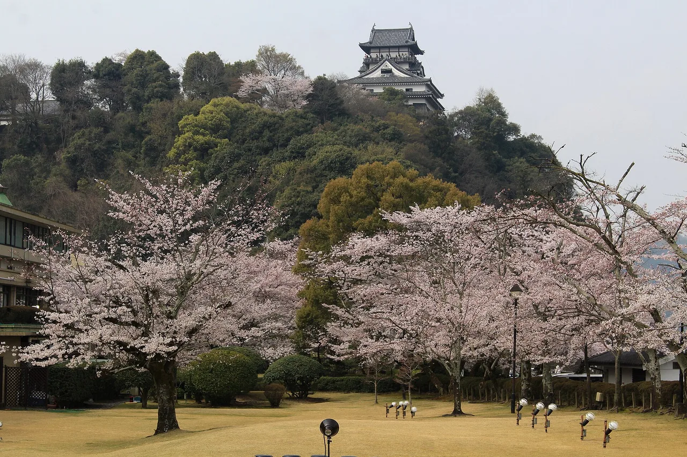

Collectible hunting in Nagoya and Aichi
The 20th Asian Games are in Aichi and Nagoya from 19 September to 4 October 2026 — 43 sports across 53 venues, with tickets sold internationally. Which means a lot of people will land in a prefecture they have never researched, with long gaps between sessions and no plan. Aichi happens to be unusually good for Japan's place-bound collecting hobbies: four of the country's 100 Famous Castles, one of only twelve original surviving keeps, more than forty towns handing out free manhole cards, and two pottery towns you can walk in an afternoon. This is what to collect between sessions, with the one deadline you cannot miss up front.

Ghibli Park is in Nagakute, Aichi — about half an hour from central Nagoya — and it is advance reservation only, no exceptions. Tickets are released two months ahead, so the Games' September dates went on sale on 10 July and the October dates go on sale on 10 August. If you are flying in for the Games and want to go, that date is the whole ball game.
First: the Ghibli Park ticket date
The park sits inside the Expo 2005 commemorative park, one exit from Linimo's Ai-Chikyūhaku-Kinen-Kōen station. There is no on-the-day entry and no lottery — it is straight first-come sales at 2 p.m. on the tenth of the month, two months ahead.
| Ticket | Covers | Weekday | Weekend / holiday |
|---|---|---|---|
| Premium Day Pass | All five areas | Adult ¥7,300 · child (4–12) ¥3,650 | Adult ¥7,800 · child ¥3,900 |
| Day Pass | Grand Warehouse, Mononoke Village, Valley of Witches | Adult ¥3,300 · child ¥1,650 | Adult ¥3,800 · child ¥1,900 |
Under-threes are free on both. Each ticket type can be bought once per month, up to six tickets at a time, and a service charge is added on issue. English-language sales run through Lawson Ticket, Klook, KKday, Viator and JTB/Sunrise Tours packages. Only the Grand Warehouse has a timed entry slot; the other areas admit from opening until 16:30.
Four of Japan's 100 Famous Castles
The 100 Famous Castles stamp rally is Japan's oldest nationwide collecting circuit, and Aichi holds numbers 43 to 46: Inuyama, Nagoya, Okazaki and Nagashino. Two of them matter for a short trip.
Inuyama Castle is the one to prioritise. It is a National Treasure and one of only twelve keeps in Japan that survived from the feudal era rather than being rebuilt in concrete — you climb original timber stairs to a wooden balcony over the Kiso River. Open 9:00–17:00 with last admission 16:30, closed 29–31 December, admission ¥1,000 for adults and ¥200 for primary and junior-high students. The rally stamp is on the second floor of the entrance gate, inside the paid area.
The catch that trips people up: Inuyama Castle does not sell its own gojōin (御城印, the paid paper castle seal). The castle's FAQ states plainly that it is sold at the Inuyama Castle-mae tourist information office in the castle's first car park, at the bottom of the hill — and that there is no mail order. Get it on the way up.
Nagoya Castle is a ten-minute walk from Shiyakusho subway station and costs ¥500, free for junior-high age and under. Be clear about what you are getting: the keep is closed and cannot be entered. The castle states it was shut because its earthquake resistance was inadequate, pending a wooden reconstruction with no published completion date. What is open, and genuinely worth the ticket, is the Honmaru Palace — a full reconstruction in cypress with reproduced painted sliding screens. On the collecting side, the castle's official shop listing does not mention a standard gojōin; the only one documented on its own site is a free commemorative version handed to the first 460 visitors at a spring festival event. Ask at the shop rather than counting on it.
Free manhole cards, and where to actually get them
Manhole cards are free collectible cards issued by the town that owns a decorated sewer cover, one per person, handed over in person at a specific counter — you cannot buy or post for them. More than forty Aichi municipalities issue at least one. These are the pickup points that sit on routes you would plausibly walk anyway.
| Town | Where to collect | Hours | Closed |
|---|---|---|---|
| Nagoya (A) | Metawater Sewerage Science Museum Nagoyaメタウォーター下水道科学館なごや | 9:30–16:30 | Mondays (next weekday if a holiday), New Year |
| Nagoya (B) | Water History Museum水の歴史資料館 | 9:30–16:30 | Mondays, New Year |
| Tokoname (A) | Noborigama Square Exhibition Workshop登窯広場展示工房館 | 9:30–16:30 | Wednesdays (open if a holiday) |
| Tokoname (B) | Tokoname Tourist Information Officeとこなめ観光案内所 | 9:00–16:30 | 29 Dec – 2 Jan |
| Seto (A) | Seto Tourist Information Office瀬戸観光案内所 | 10:00–17:00 | 28 Dec – 4 Jan |
| Seto (B) | New Century Crafts Center新世紀工芸館 | 10:00–18:00 | Tuesdays, New Year |
| Inuyama | City Hall, 2F sewerage section (weekdays); 1F night desk (weekends) | Weekdays 9:00–16:00 · weekends 9:00–17:00 | — |
| Okazaki (A) | Mikawa Samurai Museum Ieyasukan三河武士のやかた家康館 | 9:00–17:00 | 29–31 Dec |
Two of these pair with something else on the same trip. Okazaki's card is inside the museum next to Okazaki Castle, so you can take a castle rally stamp and a manhole card in one stop. Inuyama's is at the city hall rather than the castle, so budget the detour or skip it.
Tokoname and Seto: pottery towns you can walk
Aichi is one of Japan's oldest ceramic regions, and two of its kiln towns are compact enough for a half-day between sessions.
Tokoname is on the airport line, so it works as a stop on the way in or out of Centrair. Its Maneki-neko Street is a lane of 39 ceramic beckoning cats set into the wall, each with a different blessing, overlooked by Tokonyan — a giant cat face 6.3 metres wide and 3.8 metres tall, installed in 2007. It costs nothing to see. The city's own notice asks visitors to take care while photographing, because the lane is a working residential road with cars on it. Tokoname Ceramic Art Institute (Tokoname Tōnomori) is free to enter, 9:00–17:00, closed Mondays.
Seto gave Japanese the word setomono — literally "Seto ware", used to mean ceramics in general. Setogura Museum sits in the Setogura complex at ¥520 for adults, ¥310 for students and over-65s, free for junior-high and under, open 9:00–17:00 with last entry 16:30. Both of Seto's manhole cards are within walking distance of it.
Goshuin, and the hand-cut one in Toyohashi
Atsuta Jingū is Nagoya's major shrine, set in a forest twenty minutes from the centre and traditionally the home of the sacred sword. Its amulet counter opens from around 7 a.m. until roughly sunset, and the grounds themselves are open around the clock. One honest caveat: the shrine's own website does not document its goshuin — not the counter, not the fee, not the hours. Plenty of third-party sites state details, but they are not confirmed by the shrine, so ask at the counter rather than planning around a figure you read elsewhere.
For something you cannot get anywhere else, Fumon-ji in Toyohashi — an hour east by train — issues a paper-cut goshuin that is genuinely cut by hand rather than laser-cut, a design modelled on the hōrai good-luck cuttings of Kōyasan, with the characters written one sheet at a time. The temple has issued them since 2016 and puts the money toward restoring its nationally designated Important Cultural Property statues. It also posts them to people who cannot visit.
And if you are still in the country in November, Kōrankei gorge in Toyota is about an hour from the city, with roughly 4,000 maples and a temple that keeps its goshuin counter open until 21:00 at weekends during the festival — one of the few places in Japan where you can collect after dark.
About the Games merchandise
Multi-sport games have a pin-trading culture, and visitors often arrive expecting an organised swap area. Set expectations accordingly: the official Aichi-Nagoya 2026 shop sells pin badges — an emblem design and six mascot designs at ¥1,100 each, plus can badges at ¥440 — but neither the Games' official site nor its shop documents any pin-trading programme. Buy them as souvenirs; do not plan a trading afternoon around an event that has not been announced.
Aichi also has roadside-station stamps → if you are driving, and free railway station stamps → on the way in. The wider genre is covered in public infrastructure cards →. For the prefecture itself, see the Aichi guide →.
The Japanese you'll actually use
Counter staff outside central Nagoya may not switch to English. These are the words that do the work.
| Japanese | Reading | Meaning |
|---|---|---|
| マンホールカード | manhōru kādo | manhole card — free, one per person |
| ありますか? | arimasu ka? | "Do you have …?" |
| スタンプはどこですか? | sutanpu wa doko desu ka? | "Where is the stamp?" |
| 御城印 | gojōin | the paid paper castle seal |
| 天守閣 | tenshukaku | castle keep — Nagoya's is closed |
| 国宝 | kokuhō | National Treasure — Inuyama Castle is one |
| 入場料 | nyūjōryō | admission fee |
| 予約制 | yoyakusei | reservation required — Ghibli Park |
| 招き猫 | maneki-neko | beckoning cat — Tokoname's speciality |
| 瀬戸物 | setomono | ceramics, named after the town of Seto |
Want these to stick? The free JLPT battle quiz drills travel and culture vocabulary like this with spaced repetition.
Common questions
Q. When are the Asian Games in Nagoya?
A. The 20th Asian Games run from 19 September to 4 October 2026 across Aichi and Nagoya, with 43 sports at 53 venues. Tickets are sold internationally with no residency restriction, through the official ticket site.
Q. When do Ghibli Park tickets for the Games period go on sale?
A. Two months ahead, at 2 p.m. Japan time on the tenth. October 2026 dates go on sale on Monday 10 August 2026; September dates were released on 10 July. Advance reservation is required with no exceptions, and there is no on-the-day entry.
Q. Can I go inside Nagoya Castle's keep?
A. No. The keep is closed because its earthquake resistance was found inadequate, pending a wooden reconstruction with no published completion date. Admission is still ¥500 and the reconstructed Honmaru Palace is open.
Q. Which castle near Nagoya is an original?
A. Inuyama Castle, about half an hour north, is a National Treasure and one of only twelve keeps that survived from the feudal era. Admission ¥1,000 for adults, open 9:00–17:00 with last entry at 16:30.
Q. Where do I get Inuyama Castle's gojōin?
A. Not at the castle. The castle's own FAQ says it is sold at the Inuyama Castle-mae tourist information office inside the first car park at the foot of the hill, and that there is no mail order.
Q. Are manhole cards free in Aichi?
A. Yes — free, one per person, collected in person from a designated counter. More than forty Aichi municipalities issue them. Convenient pickups include the two Nagoya water museums, the Tokoname and Seto tourist offices, and the museum beside Okazaki Castle.
Q. Is there pin trading at the Asian Games?
A. The official shop sells pin badges at ¥1,100 and can badges at ¥440, but no pin-trading or exchange programme is documented on the Games' official site or shop. Treat the badges as souvenirs rather than trading stock.